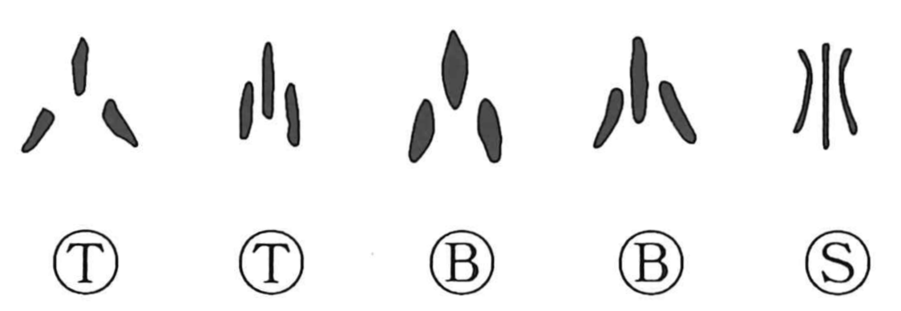

小

Kun: chiisai, ko, o | On: shou
small ・ little
Explanation
This character began as a pictograph of tiny objects scattered about—likely small shells. From that image it naturally came to mean both “small” and, by extension, “a few.” The association with shells helps explain related graphs: combining the idea of smallness with the shell element yields characters for fine, diminutive things, such as 瑣, originally evoking linked pieces of jade like a chain, and 鎖, a chain rendered in metal. The form 少 depicts small shells strung on a cord, capturing the sense of “few.” In antiquity shells were revered as ritual amulets, worn as ornament, and used as currency, a cultural backdrop that gives these shell-based images their weight and coherence.